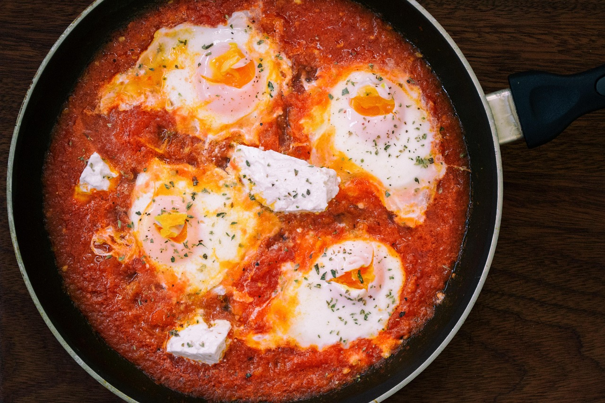

Shakshuka
Home

Image by Daniela Elena Tentis from Pixabay
Description
A delicious dish that is great for dinner. Tomatoes and eggs. What more can we ask for?
Ingredients
- 5 tomatoes
- Garlic
- 4 eggs
- Paprika
- Salt
- Pepper
Steps
- Cut the tomatoes into small pieces.
- Fry the tomatoes in a pan.
- Add the garlic gloves into the pan once the tomatoes are soft.
- Create holes in the tomatoe sauce and break the egggs into the holes.